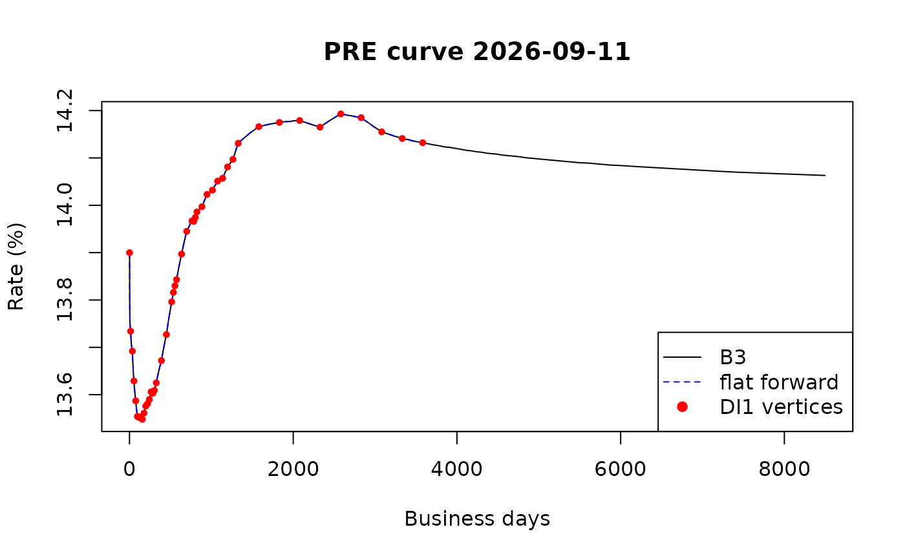
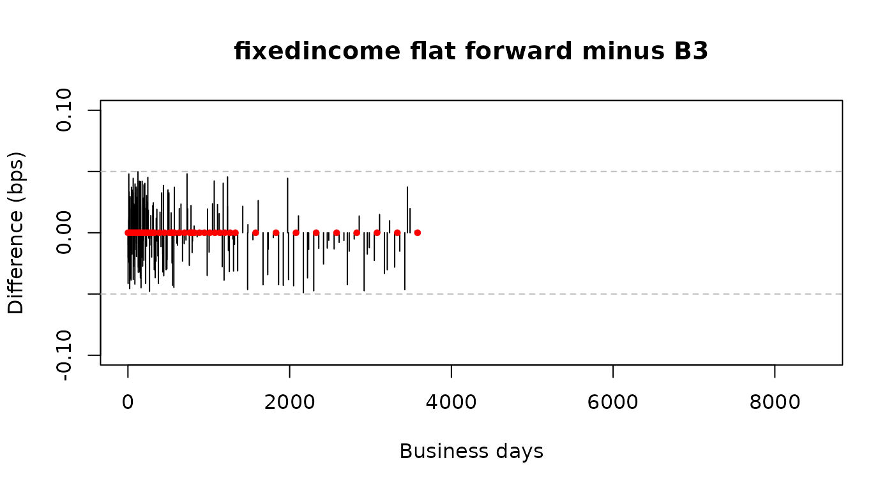

vignettes/b3-curve-flatforward.Rmd
b3-curve-flatforward.RmdEvery business day B3, the Brazilian exchange, publishes the
PRE curve: the fixed rate (pre-fixed) yield curve in BRL,
with rates for hundreds of maturities. The curve is built from the
settlement prices of the DI1 futures, and the rates between two DI1
maturities are interpolated with the flat forward method: the forward
rate is constant between two vertices.
In this article we build a curve from the DI1 futures only,
interpolate it with interp_flatforward(), and compare it
with the curve that B3 publishes.
Both curves are downloaded with the rb3 package.
yc_brl_get() returns the curve published by B3 and
yc_brl_with_futures_get() returns the same curve with the
DI1 contract of each maturity. The DI1 curve is the first vertex of B3’s
curve (one business day, the overnight rate) plus the vertices of the
DI1 contracts.
library(rb3)
library(dplyr)
refdate <- as.Date("2026-09-11")
fetch_marketdata("b3-reference-rates", refdate = refdate, curve_name = "PRE")
fetch_marketdata("b3-futures-settlement-prices", refdate = refdate)
b3 <- yc_brl_get() |>
filter(refdate == !!refdate) |>
collect() |>
select(refdate, forward_date, biz_days, r_252) |>
filter(!is.na(r_252)) |>
arrange(biz_days)
futures <- yc_brl_with_futures_get(refdate) |>
filter(!is.na(r_252), !is.na(symbol)) |>
distinct(biz_days, .keep_all = TRUE) |>
select(refdate, forward_date, biz_days, r_252, symbol) |>
arrange(biz_days)
futures <- bind_rows(b3 |> slice(1), futures)B3’s curve has 279 vertices and the DI1 curve has 46.
head(as.data.frame(futures))
#> refdate forward_date biz_days r_252 symbol
#> 1 2026-09-11 2026-09-14 1 0.13900 <NA>
#> 2 2026-09-11 2026-10-01 14 0.13734 DI1V26
#> 3 2026-09-11 2026-11-03 35 0.13692 DI1X26
#> 4 2026-09-11 2026-12-01 54 0.13629 DI1Z26
#> 5 2026-09-11 2027-01-04 76 0.13587 DI1F27
#> 6 2026-09-11 2027-02-01 96 0.13554 DI1G27The DI1 curve gets a flat forward interpolation.
di1_curve <- spotratecurve(
futures$r_252, futures$biz_days,
"discrete", "business/252", "Brazil/ANBIMA",
refdate = refdate
)
interpolation(di1_curve) <- interp_flatforward()
di1_curve
#> SpotRateCurve
#> 1 day 0.1390
#> 14 days 0.1373
#> 35 days 0.1369
#> 54 days 0.1363
#> 76 days 0.1359
#> 96 days 0.1355
#> 114 days 0.1355
#> 136 days 0.1355
#> 157 days 0.1355
#> 177 days 0.1356
#> # ... with 36 more rows
#> discrete business/252 Brazil/ANBIMA
#> Reference date: 2026-09-11
#> Interpolation: flatforwardB3’s curve is created the same way, without interpolation: we only need its rates.
b3_curve <- spotratecurve(
b3$r_252, b3$biz_days,
"discrete", "business/252", "Brazil/ANBIMA",
refdate = refdate
)With [[ the DI1 curve is interpolated at the terms of
B3’s curve, so both curves have rates for the same terms.
interp_curve <- di1_curve[[b3_curve@terms]]
plot(as.numeric(b3_curve@terms), as.numeric(b3_curve) * 100,
type = "l", xlab = "Business days", ylab = "Rate (%)",
main = paste("PRE curve", refdate)
)
lines(as.numeric(b3_curve@terms), as.numeric(interp_curve) * 100,
col = "blue", lty = 2
)
points(futures$biz_days, futures$r_252 * 100, pch = 19, col = "red", cex = 0.6)
legend("bottomright",
c("B3", "flat forward", "DI1 vertices"),
col = c("black", "blue", "red"), lty = c(1, 2, NA), pch = c(NA, NA, 19)
)
The red points are the DI1 vertices. At this scale the curves can’t be told apart, so let’s look at the differences.
The difference between the curves is measured in basis points (bps): one basis point is 0.01%.
diff_bps <- (as.numeric(interp_curve) - as.numeric(b3_curve)) * 1e4
summary(diff_bps)
#> Min. 1st Qu. Median Mean 3rd Qu. Max. NAs
#> -0.048921 -0.020311 0.000000 -0.002422 0.018133 0.049853 36
plot(as.numeric(b3_curve@terms), diff_bps,
type = "h",
xlab = "Business days", ylab = "Difference (bps)",
main = "fixedincome flat forward minus B3",
ylim = c(-0.1, 0.1)
)
abline(h = c(-0.05, 0.05), lty = 2, col = "gray")
points(as.numeric(futures$biz_days), rep(0, nrow(futures)), pch = 19, col = "red", cex = 0.6)
The largest difference is 0.050 bps. B3 publishes the rates with 5
decimal places, so each rate is rounded to 0.1 bps and the rounding
error is up to 0.05 bps: the dashed lines. All differences are inside
these lines, which means that interp_flatforward() gives
the same curve as B3, apart from the rounding. At the DI1 vertices (the
red points) both curves have the same rates, so the difference is
zero.
The table shows the rates at a few vertices between two DI1 maturities.
terms <- as.numeric(b3_curve@terms)
between <- which(!(terms %in% futures$biz_days) & terms < max(futures$biz_days))
idx <- between[c(10, 50, 100, 150, 190)]
data.frame(
biz_days = as.numeric(b3_curve@terms)[idx],
b3 = as.numeric(b3_curve)[idx],
flatforward = round(as.numeric(interp_curve)[idx], 5),
diff_bps = round(diff_bps[idx], 3)
)
#> biz_days b3 flatforward diff_bps
#> 1 15 0.13729 0.13729 0.033
#> 2 121 0.13552 0.13552 0.036
#> 3 409 0.13691 0.13691 -0.011
#> 4 1297 0.14115 0.14115 -0.005
#> 5 3207 0.14148 0.14148 -0.030Rounding the interpolated rates to 5 decimal places gives B3’s rates.
The last DI1 contract on this date has 3582 business days, but B3’s
curve goes up to 8497 business days. fixedincome doesn’t
extrapolate, so the interpolated curve has NA for these
terms.
sum(is.na(as.numeric(interp_curve)))
#> [1] 36
tail(as.data.frame(b3), 3)
#> refdate forward_date biz_days r_252
#> 277 2026-09-11 2055-05-17 7180 0.14072
#> 278 2026-09-11 2056-04-06 7405 0.14070
#> 279 2026-09-11 2060-08-16 8497 0.14063These are the NA values in the summary above.